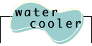

|
|
|
Lift Your Voice!
What would you do next
Synod?
Now that the General Synod is closed, we'd love to hear how you found Internet
coverage. Would you like it again at General Synod 2001? What would you do
differently? Email your comments to Doug Tindal, director of information resources,
at dtindal@national.anglican.ca.
General Synod Discussion
List
A lightly-moderated discussion mailing list you can participate in. Join Synod
members and organizers in chatting about hot issues, resolutions, and other issues close
to the Anglican Church of Canada.
Here's how to join:
Send an email message to majordomo@ns1.anglican.ca
with the words "subscribe acc-synod98" in the body of the message. |
|

The Dispatches
From The Internet board is now closed. You can still see how it worked,
though, by clicking on the link in this paragraph. |